install.packages(c("tmap", "cols4all", "tmap.cartogram", "tmap.glyphs", "tmap.mapgl"))
# or the whole family at once:
install.packages("tmapverse")uRos2026 tutorial · Paris · 18 November 2026
Goal: make clear, honest and accessible maps of official statistics in R.
| Time | Part |
|---|---|
| 11:00 | 1. tmap in a nutshell + exercise 1 |
| 11:20 | 2. Colours with cols4all + exercise 2 |
| 11:45 | 3. Mapping official statistics + exercise 3 |
| 12:10 | 4. Interactive and 3D maps + exercise 4 |
| 12:25 | Wrap-up and questions |
Materials: github.com/mtennekes/tmap-tutorial-uros2026
tutorial.qmd: these slidesexercises.R: exercises (solutions in solutions.R)Check: this should show a map of Dutch municipalities.
All data used today ship with tmap: no internet connection needed (except for basemaps).
| Package | What it adds |
|---|---|
| tmap | Thematic maps: static ("plot") and interactive ("view") |
| cols4all | Colour palettes: analyse, compare, choose |
| tmap.cartogram | Cartograms: contiguous, non-contiguous, Dorling |
| tmap.glyphs | Glyph maps: donuts, flowers |
| tmap.networks | Network and flow maps |
| tmap.mapgl | Interactive modes "maplibre" and "mapbox", 3D polygons |
Under the hood: sf, terra, stars.
[1] "code" "name" "province"
[4] "area" "urbanity" "population"
[7] "pop_0_14" "pop_15_24" "pop_25_44"
[10] "pop_45_64" "pop_65plus" "dwelling_total"
[13] "dwelling_value" "dwelling_ownership" "employment_rate"
[16] "income_low" "income_high" "edu_appl_sci"
[19] "geometry" NLD_prov (12 provinces), NLD_muni (345 municipalities), NLD_dist (3340 districts)World: country-level indicators (well-being, inequality, press freedom, …)Replace these with your own regions: anything readable by sf or terra works (GISCO/NUTS, census grids, …).
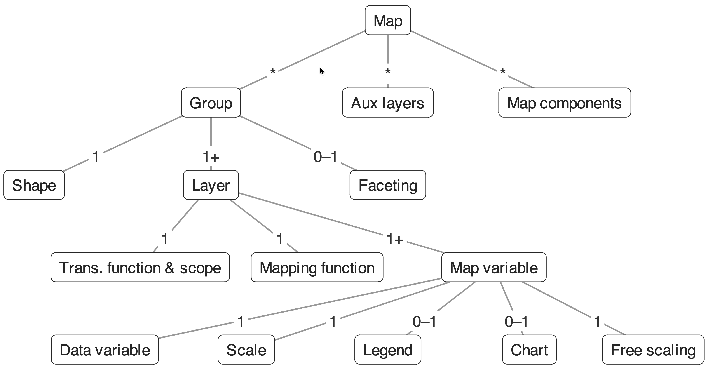
A map consists of shapes (spatial data) with layers on top, plus map components (title, legend, scalebar, …).
tm_shape(NLD_muni) + # shape: the spatial data
tm_polygons(
fill = "edu_appl_sci", # map variable: fill
fill.scale = tm_scale_intervals(), # how data -> colours
fill.legend = tm_legend("University degree (%)")) + # legend
tm_shape(NLD_prov) + # a second shape
tm_borders(lwd = 2) + # its layer
tm_title("Higher education per municipality, 2022") +
tm_credits("Source: Statistics Netherlands (CBS)")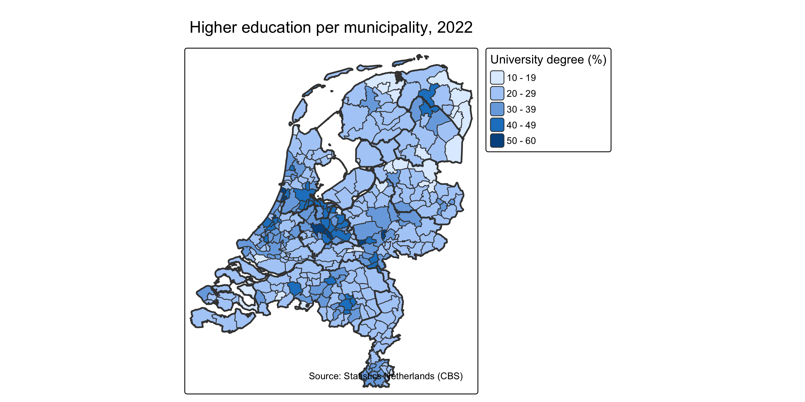
Every layer has map variables (visual variables):
| Layer | Map variables |
|---|---|
tm_polygons() |
fill, col, lwd, lty, fill_alpha, col_alpha |
tm_symbols(), tm_bubbles(), tm_dots() |
size, shape, fill, col, … |
tm_lines() |
col, lwd, lty |
tm_raster() |
col |
tm_text() |
text, size, col |
Each map variable is either constant (fill = "red") or data-driven (fill = "income_high").
A data-driven map variable x comes with x.scale, x.legend, x.chart and x.free.
| Scale function | Use |
|---|---|
tm_scale_intervals() |
classified: style = "pretty", "quantile", "kmeans", "fisher", "fixed" |
tm_scale_continuous() |
unclassified gradient (also for sizes) |
tm_scale_categorical() / tm_scale_ordinal() |
categories (unordered / ordered) |
tm_scale_bivariate() |
two variables, one colour |
tm_scale_asis() |
data already contains colours / sizes |
tm_shape(NLD_muni) +
tm_polygons(
fill = rep("dwelling_value", 3),
fill.scale = list(
tm_scale_intervals(style = "pretty"),
tm_scale_intervals(style = "quantile"),
tm_scale_intervals(style = "fisher")),
fill.legend = tm_legend("Avg. dwelling value\n(x 1000 euro)"),
col = NULL) +
tm_layout(panel.labels = c("pretty", "quantile", "fisher"))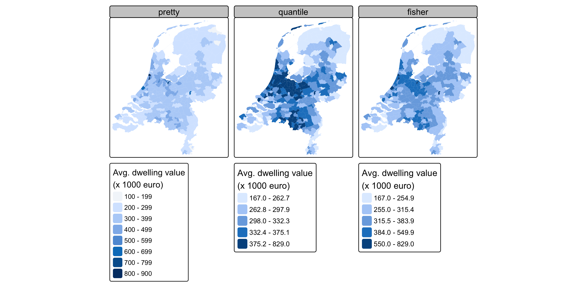
"pretty": round numbers, easy to communicate; may leave classes nearly empty"quantile": equal numbers of areas per class; small differences can look large"fisher" / "kmeans": natural groups in the data"fixed": policy thresholds, EU averages, or the same breaks over years (comparability!)For publications that are repeated (yearly, monthly), fix the breaks: otherwise colours change meaning between editions.
Also: tm_facets_wrap("province"), tm_facets_grid(), and animations with tm_facets_pagewise() + tmap_animation().
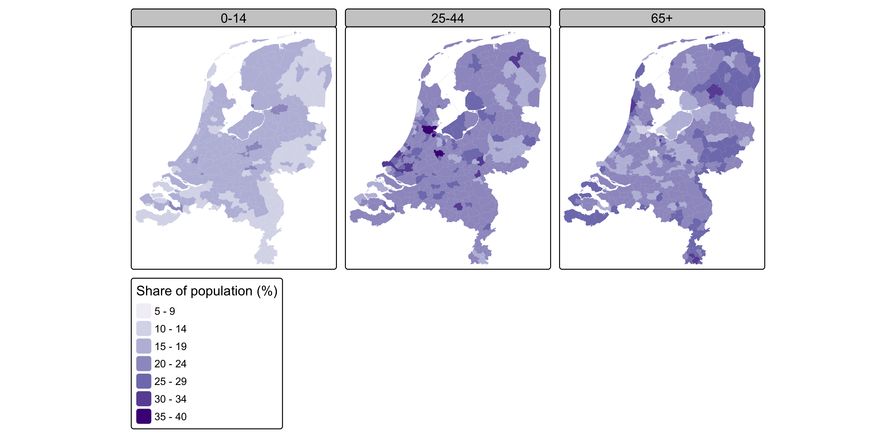
Open exercises.R.
employment_rate per municipality (NLD_muni).tm_scale_intervals() with style = "fixed" and breaks at 60, 65, 70, 75.urbanity.| Data | Palette type | Example |
|---|---|---|
| Categories without order | categorical | NACE section, land use |
| Ordered, one direction | sequential | population density, income |
| Ordered, meaningful midpoint | diverging | change (−/+), deviation from EU average |
| Cyclic | cyclic | month, hour of day |
| Two variables | bivariate | income × education |
Rule of thumb: the data determine the palette type, the house style determines the hue.
scale_fill_continuous_c4a_seq() etc.) and base R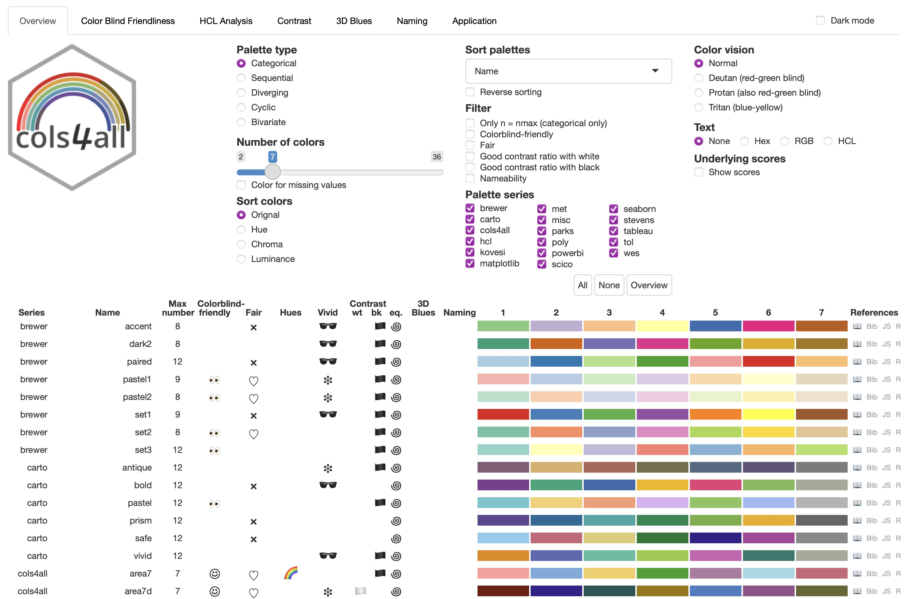
[1] "#EFF3FF" "#BDD7E7" "#6BAED6" "#3182BD" "#08519C"[1] "#08519C" "#3182BD" "#6BAED6" "#BDD7E7" "#EFF3FF"[1] "tol.sunset" "tol.nightfall" "tol.bu_rd" "tol.pu_gn" In tmap, palettes are passed via values in the scale function:
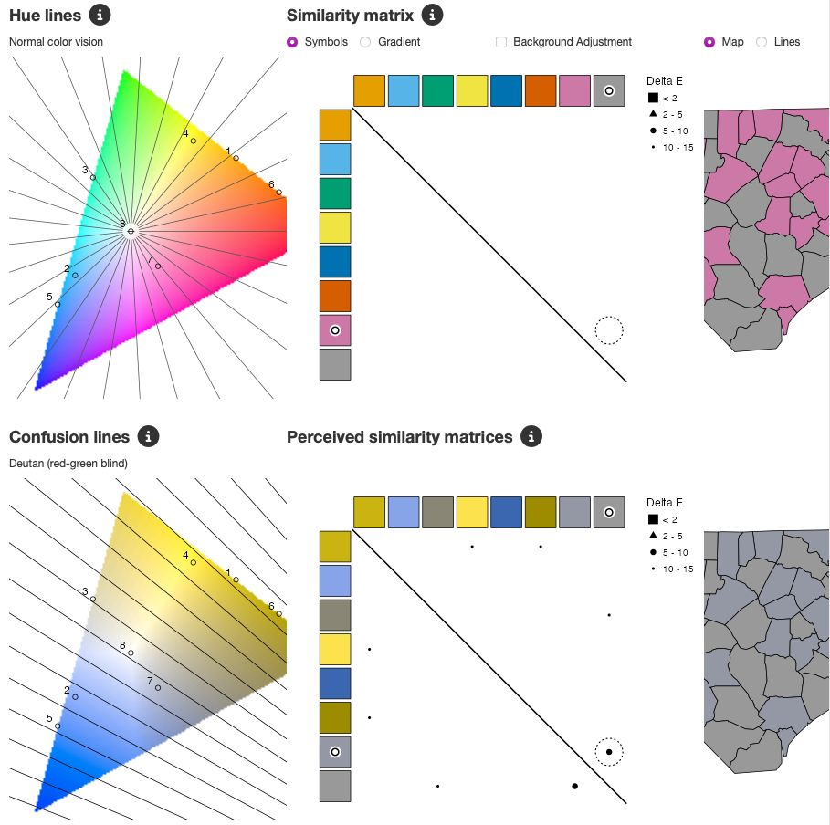
Analysis of misc.okabe: the dashboard simulates deuteranopia, protanopia and tritanopia.
pal_bad = c4a("brewer.rd_yl_gn", n = 7)
pal_good = c4a("pu_gn_div", n = 7)
m = function(pal, title) {
tm_shape(NLD_muni) +
tm_polygons("employment_rate", col = NULL,
fill.scale = tm_scale_intervals(n = 7, values = pal),
fill.legend = tm_legend_hide()) +
tm_title(title, size = 0.9)
}
tmap_arrange(
m(pal_bad, "Red-yellow-green"), m(colorspace::deutan(pal_bad), "... with deuteranopia"),
m(pal_good, "Purple-green"), m(colorspace::deutan(pal_good), "... with deuteranopia"),
ncol = 4)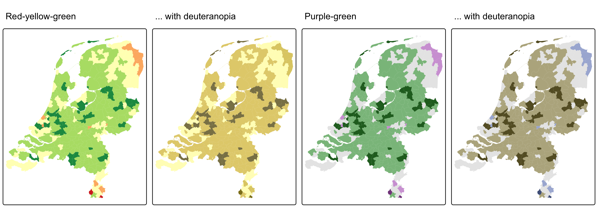
NLD_muni$emp_dev = NLD_muni$employment_rate -
weighted.mean(NLD_muni$employment_rate, NLD_muni$population, na.rm = TRUE)
tm_shape(NLD_muni) +
tm_polygons(
fill = "emp_dev",
fill.scale = tm_scale_intervals(
breaks = c(-15, -6, -3, -1, 1, 3, 6, 15),
values = "cols4all.pu_gn_div",
midpoint = 0),
fill.legend = tm_legend("Employment rate,\ndeviation from NL (%-pt)"),
col = "white", lwd = 0.3) +
tm_shape(NLD_prov) + tm_borders(col = "grey30")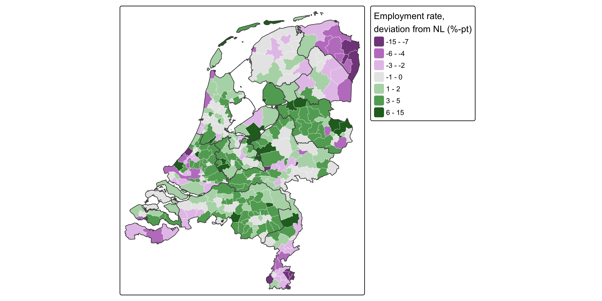
Most statistical offices have a corporate palette. Analyse it before using it on a map:
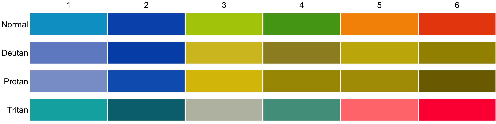
Often fine for categorical charts, but not for sequential maps: build a sequential scale from one house hue instead.
value.na)c4a_gui(). Find a sequential, colour-blind friendly palette you like.dwelling_ownership minus its national average with a diverging palette and midpoint = 0.c4a_gui(pal = ...).tmap_arrange(
tm_shape(NLD_muni) +
tm_polygons("population", col = NULL,
fill.scale = tm_scale_intervals(style = "fisher", values = "brewer.blues")) +
tm_title("Wrong: count as colour"),
tm_shape(NLD_muni) +
tm_polygons(fill = "grey90", col = "white") +
tm_bubbles(size = "population", fill = "steelblue", col = "white") +
tm_title("Better: count as size"),
ncol = 2)Large areas attract attention, regardless of their population.
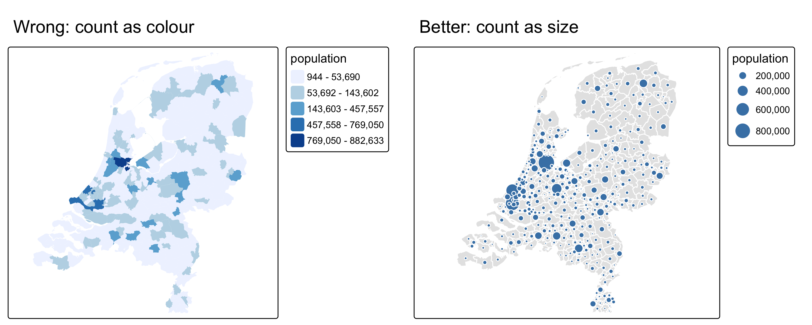
tm_bubbles(size = "population")library(tmap.cartogram)
tm_shape(NLD_muni) +
tm_cartogram_dorling(
size = "population",
fill = "income_high",
fill.scale = tm_scale_intervals(values = "brewer.yl_gn_bu", style = "fisher"),
fill.legend = tm_legend("High income\nhouseholds (%)"),
col = "white") +
tm_title("Municipalities sized by population")Also tm_cartogram() (contiguous) and tm_cartogram_ncont() (non-contiguous). Use an equal-area CRS.
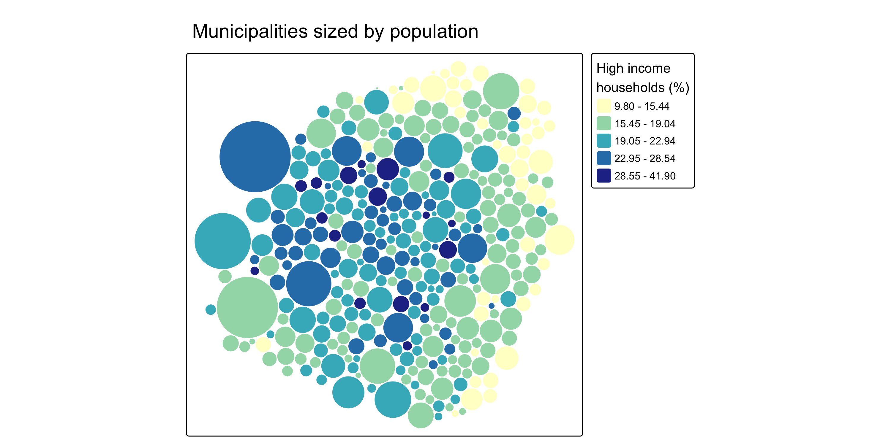
NLD_dist has missing income figures. Who are they?
Min. 1st Qu. Median Mean 3rd Qu. Max.
0.00 10.00 45.00 54.52 85.00 525.00 All districts with at most 525 inhabitants: values not published for confidentiality.
A blank or grey area should tell the reader why it is empty.
ams = NLD_dist[NLD_dist$province %in% c("Noord-Holland", "Flevoland"), ]
tm_shape(ams) +
tm_polygons(
fill = "income_high",
fill.scale = tm_scale_intervals(
style = "fixed", breaks = c(0, 10, 15, 20, 25, 30, 60),
values = "brewer.purples",
value.na = "white", label.na = "Not published\n(< 550 inhabitants)"),
fill.legend = tm_legend("High income households (%)"),
col = "grey60", lwd = 0.3) +
tm_layout(frame = FALSE)Combine with statistical disclosure control upstream (see the rtauargus tutorial, Room 3).
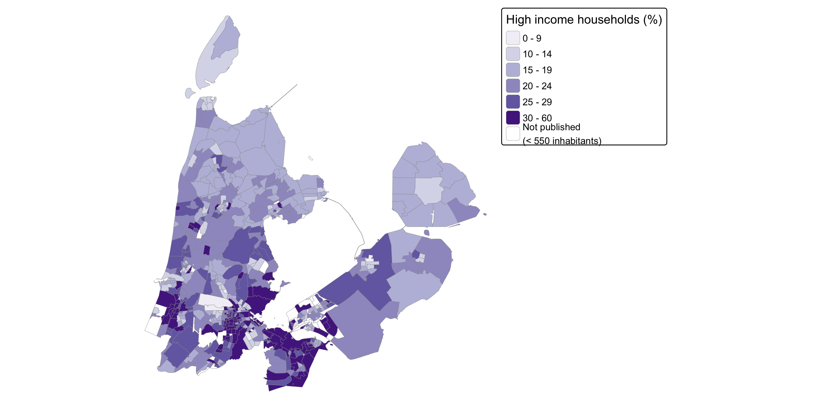
tm_shape(NLD_muni) +
tm_polygons(
fill = tm_vars(c("income_high", "edu_appl_sci"), multivariate = TRUE),
fill.scale = tm_scale_bivariate(
scale1 = tm_scale_intervals(style = "quantile", n = 3, labels = c("L", "M", "H")),
scale2 = tm_scale_intervals(style = "quantile", n = 3, labels = c("L", "M", "H")),
values = "pu_gn_bivs"),
fill.legend = tm_legend_bivariate(
xlab = "High income", ylab = "University degree",
item.r = 0, item.width = 2, item.height = 2,
position = tm_pos_in("left", "top")),
col = "white", lwd = 0.5) +
tm_shape(NLD_prov) + tm_borders(col = "grey20", lwd = 1.5) +
tm_layout(frame = FALSE)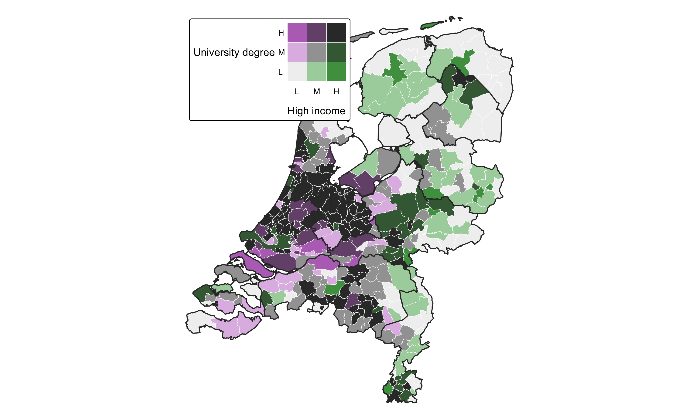
c4a_palettes(type = "bivs"), and "bivc", "bivd", "bivg"library(tmap.glyphs)
ZH_muni = NLD_muni[NLD_muni$province == "Zuid-Holland", ]
ZH_muni$income_middle = 100 - ZH_muni$income_high - ZH_muni$income_low
tm_shape(ZH_muni) +
tm_polygons(fill = "grey95", col = "grey70") +
tm_donuts(
parts = tm_vars(c("income_low", "income_middle", "income_high"), multivariate = TRUE),
fill.scale = tm_scale_categorical(values = "-pu_gn_div",
labels = c("Low", "Middle", "High")),
fill.legend = tm_legend("Income group"),
size = "population",
size.scale = tm_scale_continuous(ticks = c(50000, 100000, 250000, 500000)),
size.legend = tm_legend("Population"))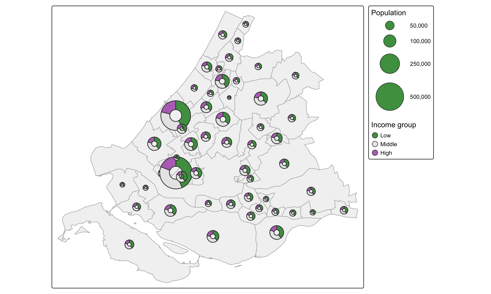
map = tm_shape(NLD_muni) +
tm_polygons("edu_appl_sci",
fill.scale = tm_scale_intervals(style = "fixed", breaks = c(10, 20, 25, 30, 40, 60),
values = "tol.iridescent"),
fill.legend = tm_legend("University\ndegree (%)", position = tm_pos_in("left", "top"),
frame = FALSE),
col = "white", lwd = 0.3) +
tm_shape(NLD_prov) + tm_borders(col = "grey25") +
tm_scalebar(position = c("right", "bottom")) +
tm_credits("Source: CBS, 2022", position = c("right", "bottom")) +
tm_layout(frame = FALSE, fontfamily = "sans")
map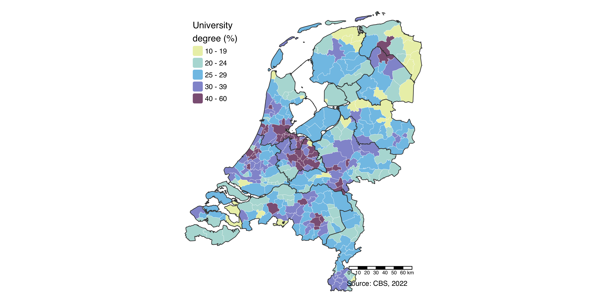
Put this in an internal package: every map from your office has the same look.
dwelling_total) per municipality as bubbles on top of a light grey choropleth.dwelling_total and coloured by dwelling_ownership.NLD_dist) of one province of your choice for income_low, with a clear label for suppressed values.income_low and pop_65plus. Which palette from c4a_palettes(type = "bivs") works best?tmap_mode("view") # or: ttm() to toggle
tm_shape(NLD_muni) +
tm_polygons("edu_appl_sci",
fill.scale = tm_scale_intervals(values = "tol.iridescent"),
hover = "name",
popup = tm_popup(vars = c("Population" = "population",
"University degree (%)" = "edu_appl_sci",
"High income (%)" = "income_high"))) +
tm_basemap("CartoDB.Positron")The same map code, rendered with Leaflet.
hover: label on mouse-over; popup = tm_popup(): table on clickgroup: layers that can be switched on and offrenderTmap(), tmapOutput(), tmapProxy()tm_polygons_3d()tmap_mode("maplibre")
NLD_dist$pop_dens = NLD_dist$population / NLD_dist$area
tm_shape(NLD_dist) +
tm_polygons_3d(
height = "pop_dens",
fill = "edu_appl_sci",
fill.scale = tm_scale_intervals(style = "kmeans", values = "tol.iridescent"),
fill.legend = tm_legend("University degree (%)"),
hover = "name") +
tm_maplibre(pitch = 45) +
tm_crs(3857) # Web Mercator: avoids 3D artefacts of the default globeMore on Friday: A5, 3D Thematic Mapping in R with tmap v4 and tmap.mapgl.
"view" mode and show the map of exercise 3.3 interactively, with the district name on hover and income in the popup."maplibre" and make the 3D map of the previous slide.pitch and the fill variable. Rotate the map with Ctrl + drag.Thank you!